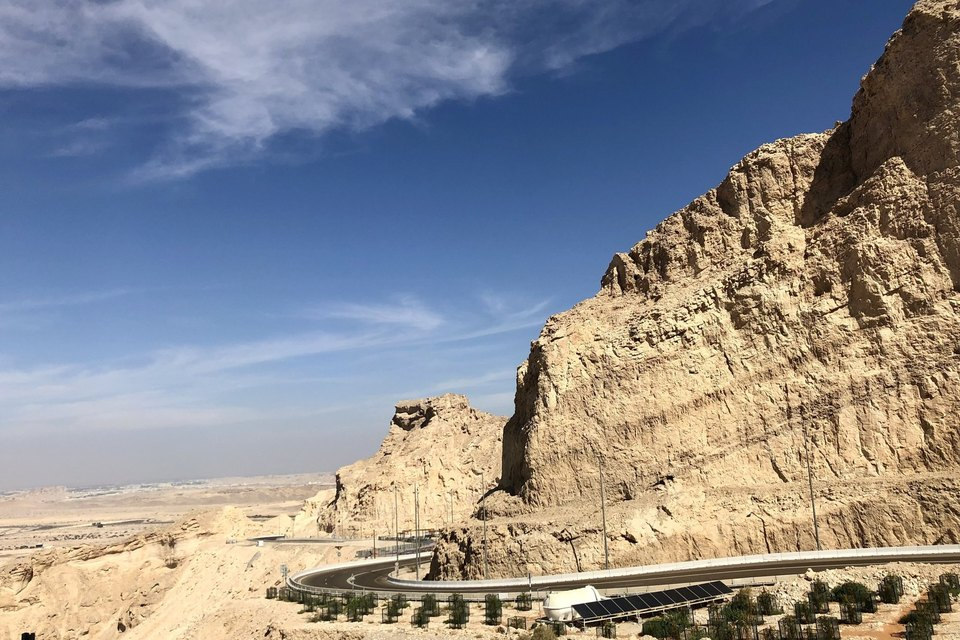

United Arab Emirates · Al Ain
Jebel Hafit audio guide
8 stops · 17 min
Billed in ZAR
Unlocks in this browser after payment.
The mountain drive, limestone desert ridges, and 5,000-year-old beehive tombs at the base. Listen here, or get the Earwise app to play as you walk.
Stops
- 1
The mountain
Jebel Hafit rises alone on the plain: the highest mountain in the emirate of Abu Dhabi.
Free sample: stop 1
Play0:00 / –:–– - 2
The beehive tombs
Low, round piles of stone: tombs built about five thousand years ago, at the start of the Bronze Age.
Script and audio included when you buy - 3
Who built them, and how they were found
Beside one of the restored tombs. This is stop 3 on the route.
Script and audio included when you buy - 4
Before and after the tombs
In the desert park, looking across the plain. This is stop 4 on the route.
Script and audio included when you buy - 5
Mezyad Fort
Outside Mezyad Fort, at the southern end of the mountain. This is stop 5 on the route.
Script and audio included when you buy - 6
The mountain road
On the road climbing Jebel Hafit. If you are driving, keep your eyes on the road. This is stop 6 on the route.
Script and audio included when you buy - 7
The summit
At the car park near the top of Jebel Hafit. This is stop 7 on the route.
Script and audio included when you buy - 8
Green Mubazzarah
At the foot of the mountain lies Green Mubazzarah, a park of lawns, chalets and streams built around natural hot springs.
Script and audio included when you buy
On the map
All 8 stop pins for this guide are marked. Open map